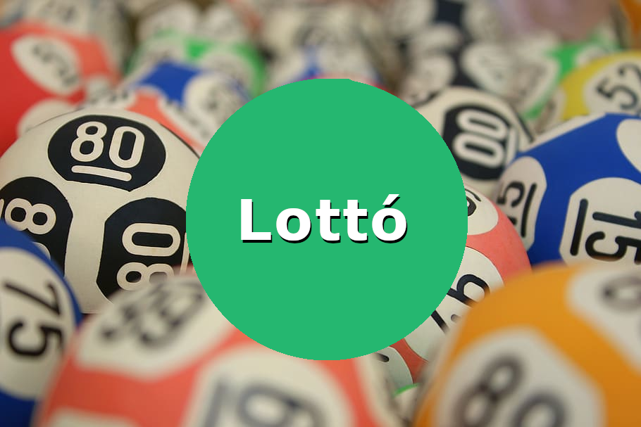

Korábbi sorsolások
Korábbi sorsolások
Az előző heti nyerőszámok
Az múlt heti nyerőszámok
Leggyakoribb számok
Leghosszabb sorozatok számsorokban
Legkisebb összegű számsorok
Grafikonok
Érdekes történetek